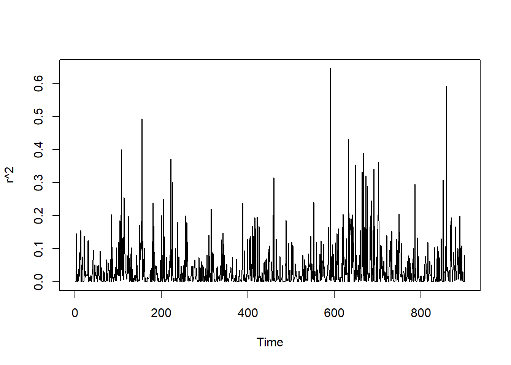

Session 6 Volatility modeling
6.1 GARCH(1,1) estimation
In this session, we implement the maximum likelihood estimation of the GARCH(1,1) model. We consider a Gaussian GARCH(1,1)
\[ \begin{aligned} r_t &= \sigma^2_t z_t \\[1ex] \sigma^2_t &= \omega + \alpha r_{t-1}^2 + \beta \sigma^2_{t-1} \end{aligned} \]
where \(z_t \sim \mathcal{N}(0, 1)\). The log-likelihood is (Exercise 3):
\[ \ell(\theta; r_1, \dots, r_T) = -\frac{T-1}{2}\log(2\pi) - \frac{1}{2}\sum_{t=2}^T\log\hat\sigma_t -\frac{1}{2} \sum_{t=2}^T \frac{r_t^2}{\hat\sigma^2_t} \]
The values of the latent volatility \(\{\sigma_2^2, \sigma_3^2, \dots, \sigma_T^2\}\) can be estimated using the following filtering procedure for each given value \(\theta = (\omega, \alpha, \beta)\):
- set \(\hat\sigma^2_t = \hat{\text{Var}}(r_t)\)
- for \(t = 2, \dots, T\) set \(\hat\sigma^2_t = \omega + \alpha r_{t-1}^2 + \beta \hat\sigma^2_{t-1}\)
We simulate the data according to the GARCH(1,1) process and compare the MLE with the true parameters.
## Simulate data
t_max <- 1000
w <- 0.01
alpha <- 0.05
beta <- 0.949
z <- rnorm(t_max)
sigma <- c(1, rep(NA, t_max))
r <- c(sigma[1]*z[1], rep(NA, t_max))
for (t in 2:(t_max+1)) {
set.seed(t*212) # for reproducibility
sigma[t] <- w + alpha*r[t-1] + beta*sigma[t-1]
r[t] <- sigma[t]*z[t]
}
r <- r[100:1000]

Estimation
## filter
garch11_filter <- function(data, params){
# initializations
omega <- params[1]
alpha <- params[2]
beta <- params[3]
T <- length(data)
sig2 <- numeric(T)
z <- numeric(T)
loglik <- 0
sig2[1] <- var(data); z[1] <- data[1]/sqrt(sig2[1])
# for loop calculating one-step-ahead
for (t in 2:T){
sig <- omega + alpha * data[t-1]^2 + beta * sig2[t-1]
sig2[t] <- sig; z[t] <- data[t]/sqrt(sig)
}
# loglik
loglik <- -T/2*log(2*pi) - sum(log(sig2))/2 - sum(data^2/sig2)/2
return(list(sig2 = sig2, z = z, loglik = loglik))
}## likelihood
garch11_objective <- function(data, params) {
#initializations
omega <- params[1]
alpha <- params[2]
beta <- params[3]
T <- length(data)
sig2 <- garch11_filter(data, params)$sig2
# if-else statement calculating negative loglik
if (all(is.finite(params)) & omega > 0 & alpha > 0 & beta > 0 & alpha + beta < 1) {
neg_loglik <- -(-T/2*log(2*pi) - sum(log(sig2))/2 - sum(data^2/sig2)/2)
} else {
neg_loglik <- Inf
}
return(neg_loglik)
}## MLE
garch11_mle <- function(data, params) {
# nlminb function optimizing parameters
fit <- nlminb(start = params, objective = garch11_objective,
data = data, lower = 0.0001, upper = 1)
return(param_mle = fit$par)
}For comparison, we also estimate the model using the garch function in the package tseries.
## estimate garch(1,1) using built-in function
library(tseries)
garch_tseries <- garch(r, c(1,1), verbose = FALSE)## mle
## a0 0.001 0.001 0.010
## a1 0.037 0.037 0.050
## b1 0.931 0.931 0.9496.2 Exercises
Exercise 1 (ARCH(\(\infty\)) representation of GARCH(1,1))
Show that the GARCH(1,1)
\[ \begin{aligned} r_t &= \sigma^2_t z_t \\[1ex] \sigma^2_t &= \omega + \alpha r_{t-1}^2 + \beta \sigma^2_{t-1} \end{aligned} \] with \(\mathbb{E}[z_t] = 0\), \(\mathbb{E}[z^2_t] = 1\) can be rewritten as an ARCH(\(\infty\)) with
\[ \sigma^2_t = \frac{\omega}{1-\beta} + \alpha \sum_{j=0}^\infty \beta^j \ r^2_{t-j-1} \]
under the assumption that \(|\beta| < 1\).
Exercise 2 (Autocovariance of the GARCH(1,1))
Consider the GARCH(1,1)
\[ \begin{aligned} r_t &= \sigma^2_t z_t \\[1ex] \sigma^2_t &= \omega + \alpha r_{t-1}^2 + \beta \sigma^2_{t-1} \end{aligned} \]
with \(\mathbb{E}[z_t] = 0\), \(\mathbb{E}[z^2_t] = 1\).
Show that:
\[ \gamma(k) = \text{cov}(r_t, r_{t-k}) = \begin{cases} \frac{\omega}{1-\alpha-\beta} \qquad & k = 0 \\ 0 & k \neq 0 \end{cases} \]
[Difficult question] Also show that
\[ \gamma_2(k) = \text{cov}(r^2_t, r^2_{t-k}) = \begin{cases} \text{Var}(r^2_t - \sigma^2_t)\left[1+\frac{\alpha+2\beta}{1-(\alpha+\beta)^2}\right] \qquad & k = 0 \\[1em] \text{Var}(r^2_t - \sigma^2_t)\left[\alpha+2\beta+\frac{(\alpha+2\beta)^2 (\alpha+\beta)}{1-(\alpha+\beta)^2}\right] \qquad & k = 1 \\[1em] (\alpha+\beta)^{k-1}\gamma(1) & k \geq 2 \end{cases} \] where \(\text{Var}(r^2_t - \sigma^2_t) = (\mu_4 - 1)\left( \sigma_4 - \left(\frac{\omega}{1-\alpha-\beta}\right)^2 \right)\), \(\sigma^4 = \mathbb{E}[\sigma^4_t]\) (you do not need to find the explicit expression for this in terms of the parameters) and \(\mu_4 = \mathbb{E}[z_t^4]\).
Hint: Show that the GARCH(1,1) admits an ARMA(1,1) representation \(\sigma_t^2 = \omega + (\alpha+\beta)r^2_{t-1} + \beta(r^2_{t-1}-\sigma^2_{t-1}) + (r^2_{t}-\sigma^2_{t})\) and apply the formula for the autocovariance of the ARMA(1,1) (see Exercise 3 in Session 4).
Exercise 3 (Log-likelihood of the GARCH(1,1))
Consider a Gaussian GARCH(1,1)
\[ \begin{aligned} r_t &= \sigma^2_t z_t \\[1ex] \sigma^2_t &= \omega + \alpha r_{t-1}^2 + \beta \sigma^2_{t-1} \end{aligned} \]
where \(z_t \sim \mathcal{N}(0, 1)\). Show that the conditional log-likelihood of the model is
\[ \ell(\theta; r_1, \dots, r_T) = -\frac{T-1}{2}\log(2\pi) - \frac{1}{2}\sum_{t=2}^T\log\hat\sigma_t -\frac{1}{2} \sum_{t=2}^T \frac{r_t^2}{\hat\sigma^2_t} \]
where \(\hat\sigma_t^2\) is the predicted value of the latent volatility computed using the filtering procedure described in the session.